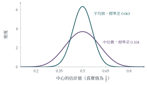

STEP II 2000，第 14 題
繼續之前，請先閱讀題目（原題為英文）。題目載於 STEP Support Programme 的題目資料庫： step.maths.org/questions/00-s2-q14
引子
要估計一組量度數據的中心，你可以取平均值（mean），也可以取中位數（median）。哪一個較好？答案視乎數據而定。假如量度結果偶爾會出現離譜的誤差，中位數就可靠得多：一個荒謬的數值足以把平均值拉到任何地方，卻幾乎動搖不了中位數。至於規規矩矩的數據，通常是平均值勝出。本題要量度的，正是在數據服從均勻分佈（uniform distribution）時，平均值究竟勝出多少：中位數的方差（variance）是平均值的三倍，所以要令中位數與平均值同樣精確，就需要三倍數量的觀測值。
這個比較引入了效率（efficiency）的概念，它是選擇統計方法時的主要考慮之一；同時也用到 Beta 積分（beta integral），這個積分在 第 4.4 節 也出現過。
動筆之前
為甚麼中位數的密度（density）與 \(y^n(1 - y)^n\) 成正比？（要 \(Y\) 接近 \(y\)，\(2n + 1\) 個值之中須有多少個在其下，又有多少個大於 \(y\)？）
中位數要落在 \(y\)，就必須有一個值在 \(y\)，\(n\) 個值在其下（各自的概率為 \(y\)），另有 \(n\) 個值在其上（各自的概率為 \(1 - y\)）。這就得出因子 \(y^n(1 - y)^n\)；常數則是數算哪些值扮演哪個角色的選法數目。
逐步解題
階段 1 常數
密度的積分必須等於 \(1\)： \[k\int_0^1y^n(1 - y)^n\,\mathrm{d}y = k\cdot\frac{n!\,n!}{(2n + 1)!} = 1, \qquad k = \frac{(2n + 1)!}{(n!)^2}. \qed\]
階段 2 平均值與方差
密度關於 \(\frac12\) 對稱（把 \(y\) 換成 \(1 - y\) 即可看出），所以 \(\mathrm{E}(Y) = \frac12\)。
利用 Beta 積分計算 \(\mathrm{E}(Y^2) = k\int_0^1y^{n+2}(1 - y)^n\,\mathrm{d}y\)，並化簡當中的階乘。
\[\mathrm{E}(Y^2) = \frac{(2n + 1)!}{(n!)^2}\cdot\frac{(n + 2)!\,n!}{(2n + 3)!} = \frac{(n + 2)(n + 1)}{(2n + 3)(2n + 2)} = \frac{n + 2}{2(2n + 3)}.\] 因此 \[\mathrm{Var}(Y) = \frac{n + 2}{2(2n + 3)} - \frac14 = \frac{2(n + 2) - (2n + 3)}{4(2n + 3)} = \frac{1}{4(2n + 3)}. \qed\]
階段 3 與平均值比較
\(\bar X\) 是 \(2n + 1\) 個獨立均勻變量的平均，它的平均值和方差是多少？
每個 \(X_i\) 的平均值為 \(\frac12\)，方差為 \(\frac{1}{12}\)，所以 \(\mathrm{E}(\bar X) = \frac12\)，而 \(\mathrm{Var}(\bar X) = \frac{1}{12(2n + 1)}\)。當 \(n\) 很大時， \[\mathrm{Var}(Y) \approx \frac{1}{8n}, \qquad \mathrm{Var}(\bar X) \approx \frac{1}{24n}.\]
假設 \(Y\) 和 \(\bar X\) 都服從正態分佈（normal distribution），平均值為 \(\frac12\)，標準差（standard deviation）分別為 \(\sigma_Y\) 和 \(\sigma_{\bar X}\)，試用標準正態分佈函數 \(\Phi\) 表示這兩個概率。
\(\mathrm{P}\bigl(|Y - \frac12| < \frac{d}{\sqrt n}\bigr) = 2\Phi\bigl(\frac{d}{\sqrt n\,\sigma_Y}\bigr) - 1\)，而 \(\sqrt n\,\sigma_Y \to \frac{1}{\sqrt8}\)；\(\bar X\) 的情況相似，其中 \(\sqrt n\,\sigma_{\bar X} \to \frac{1}{\sqrt{24}}\)。所以兩個概率分別趨向 \(2\Phi(d\sqrt8) - 1\) 和 \(2\Phi(d\sqrt{24}) - 1\)。由於 \(\Phi\) 是遞增函數，而且 \(\sqrt{24} > \sqrt8\)，後者較大，因此對所有足夠大的 \(n\)，不等式都成立。■ 平均值較有可能接近真正的中心。

回顧
Beta 積分。\(\int_0^1y^r(1 - y)^s\,\mathrm{d}y\) 這一條公式，同時給出了歸一化常數（normalising constant）和各階矩（moments）。
對稱性給出平均值。求 \(\mathrm{E}(Y)\) 根本不用積分。
在合適的尺度上比較離散程度。把標準差乘以 \(\sqrt n\)，比較的結果便與 \(n\) 無關。
背後的數學
效率
兩個無偏估計量（unbiased estimator）的相對效率（relative efficiency）是它們方差之比；它說明其中一個需要多少倍的觀測值，才能與另一個看齊。對於均勻分佈的數據，中位數相對於平均值的效率是 \(\frac13\)。對於正態分佈的數據，這個數字是 \(\frac2\pi \approx 0.64\)：中位數大約需要多 \(57\%\) 的觀測值。但遇上厚尾（heavy-tailed）數據，形勢就逆轉了。對於柯西（Cauchy）分佈（第 12.22 節），平均值毫無用處，因為 \(n\) 個觀測值的平均並不比單獨一個觀測值好，而中位數卻表現良好。對於拉普拉斯（Laplace）分佈（第 12.24 節），中位數的效率是平均值的兩倍。
穩健統計學
中位數是穩健（robust）的：即使把接近一半的數據改成任意數值，它也不會移動太遠。平均值卻沒有這種保障：一個錯誤的數值就足以把它毀掉。在 1960 及 1970 年代，John Tukey、Peter Huber 等人發展出穩健統計學（robust statistics），即一些估計量，對乾淨的數據而言效率幾乎與平均值一樣高，卻又能抵禦離羣值（outlier），例如截尾平均值（trimmed mean）（捨去最大和最小的 \(10\%\)，再取餘下數據的平均），跳水、體操等運動項目的評分就採用這種方法。
拉普拉斯在 1774 年證明，假如誤差服從雙指數（拉普拉斯）分佈，則真實值的最佳估計是中位數；高斯（Gauss）在 1809 年證明，假如誤差服從正態分佈，則最佳估計是平均值，他並由此得出最小二乘法（method of least squares）。誰是誰非，取決於誤差的表現如何；每遇上一種新的數據，統計學家至今仍會為這個問題爭論一番。
思維技巧
兩種方法可能平均而言都正確；要比較的是它們的答案變動有多大，以及數據增加時這種變動收縮得有多快。
在大學裏，漸近效率（asymptotic efficiency），即比較大樣本下的方差，是在不同統計方法之間作取捨的標準工具；與之並用的還有穩健性，以應付模型可能出錯的情況。
延伸練習
中位數的密度。用數算的方法推導密度 \(\frac{(2n + 1)!}{(n!)^2}y^n(1 - y)^n\)：一個值落在 \([y, y + \delta y]\) 內，\(n\) 個在其下，\(n\) 個在其上。
三個觀測值。當 \(n = 1\)（三個均勻觀測值）時，求 \(\mathrm{Var}(Y)\) 和 \(\mathrm{Var}(\bar X)\) 的準確值。哪一個較小？
中列數。中心的另一個估計量是中列數（midrange）\(\frac12(\max + \min)\)。證明對於均勻分佈的數據，若有 \(m = 2n + 1\) 個觀測值，它的方差是 \(\frac{1}{2(m + 1)(m + 2)}\)。它與平均值相比如何？（試與 第 13.3 節 比較。）
一個離羣值。十一個量度結果為 \(9.8\)、\(9.9\)、\(10.0\)、\(10.0\)、\(10.1\)、\(10.1\)、\(10.2\)、\(10.2\)、\(10.3\)、\(10.4\) 和 \(104\)（打字錯誤）。比較平均值和中位數。
延伸閱讀
John Rice, Mathematical Statistics and Data Analysis（Duxbury），論及順序統計量（order statistics）和效率。
Rand Wilcox, Fundamentals of Modern Statistical Methods（Springer）。為非專家講解穩健方法為何重要。
Stephen Stigler, The Seven Pillars of Statistical Wisdom（Harvard University Press）。從歷史角度看數據的匯總、平均值和中位數。